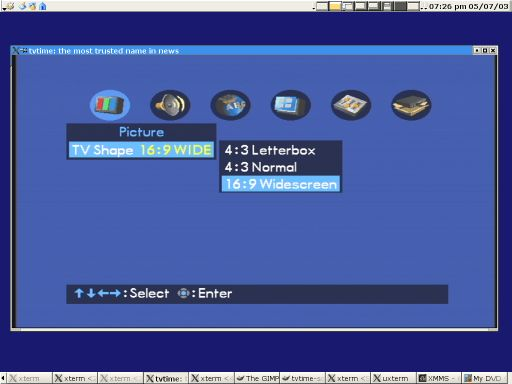
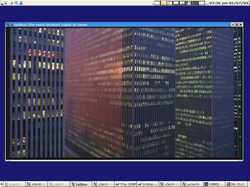

Using tvtime
Interested in tvtime? Having trouble? Have suggestions? Why not hang
out with us on IRC at
irc.freenode.net, channel
#livid. Hope to see you there!
There is also a
tvtime mailing list
which you can subscribe to, or read on the web.
Almost all features of tvtime can be configured through the menu system.
Click the right mouse button, or hit tab when you run tvtime to bring up the
menu. As well, many features can be configured through the command line
parameters. Run 'tvtime --help' to get a list of command line
arguments. You can also save command line arguments to the config file
using --saveoptions. For example:
tvtime --saveoptions --norm=pal --frequencies=europe
This will save to your config file the norm PAL and frequency table
Europe as your defaults. See docs/default.tvtime.xml for a default
configuration file and the default runtime keybindings.
3.1. Deinterlacing modes
tvtime includes different deinterlacing modes for different types of
content as well as different output refresh rates or CPU constraints.
Below we have separated out our modes based on their content, and
provide a description of each.
3.1.1 Modes built for video content
- News shows and information channels.
- Most live-action television dramas.
- Sports broadcasts.
- Most video gaming consoles.
Television
What does it do?
tvtime expands each field to full resolution,
without ever blurring in time or copying in time.
this effectively simulates a television.
When do I use it?
You want TV-quality with low CPU, and you have
configured your monitor to run at the refresh
rate of the video signal (59.94 Hz or 50 Hz).
Modes available
- Full Resolution: High quality for fullscreen use.
- Half Resolution: Poor quality for watching
TV in a small window.
Blur
What does it do?
tvtime avoids flicker by blurring together
consecutive frames of input.
When do I use it?
You want to run your monitor at an arbitrary
refresh rate, and have tvtime not use much CPU.
Modes available
- Vertical: Blur vertically more than temporally,
better for high motion content like sports.
- Temporal: Evenly blur in time, low CPU mode for
less flicker, but visible trails on fast motion.
Motion adaptive
What does it do?
tvtime tries to detect motion in the input
frames, reconstructing detail where possible.
When do I use it?
You want to run your monitor at an arbitrary
refresh rate, and don't mind using a lot of CPU.
Modes available:
- Simple and Advanced detection: Linear
interpolation where motion is detected, copy
where no motion. Simple and advanced versions
are provided to give small or moderate CPU
requirements with high quality output.
These are the greedy low motion and high motion
deinterlacers from DScaler.
- Motion search: Follow motion vectors for more
accurate interpolation. High quality with high
CPU requirements. This is the TomsMoComp
deinterlacer from DScaler.
3.1.2 Modes built for film content
- Films broadcast on TV or from a DVD player.
- Cartoons and most anime.
- Some higher budget television dramas
- Older video gaming consoles.
Progressive (top or bottom field first)
What does it do?
tvtime constructs frames from pairs of fields.
When do I use it?
Using a video game from a console system which
sends a progressive signal.
Watching a film broadcast or DVD in a PAL area.
Modes available:
- Top Field First and Bottom Field first. You
must experiment with your content and see how
it is being sent, and select the appropriate
mode in tvtime to match it.
Progressive Detection
What does it do?
While not currently available in tvtime, this
option would allow us to detect progressive
content, and whether it is top or bottom field
first, rather than manually setting this option.
When do I use it?
Using a video game from a console system which
sends a progressive signal.
Watching a film broadcast or DVD in a PAL area.
NTSC Film Mode
What does it do?
tvtime detects a 2-3 pulldown sequence in the
video stream and uses this information to
intelligently reconstruct frames.
When do I use it?
Watching an NTSC broadcast of a cartoon,
film, or television program shot on film.
How do I use it?
NTSC film detection can be enabled at any
time. This will use more CPU to analyze
the input and detect pulldown, entering film
mode when detection is successful.
The following is a table of the available deinterlacing modes and their
names in the config file.
| Short name
| Long name
|
|---|
| TelevisionFull | Television: Full Resolution
| | TelevisionHalf | Television: Half Resolution
| | BlurVertical | Blur: Vertical
| | BlurTemporal | Blur: Temporal
| | AdaptiveSearch | Motion Adaptive: Motion Search
| | AdaptiveAdvanced | Motion Adaptive: Advanced Detection
| | AdaptiveSimple | Motion Adaptive: Simple Detection
| | ProgressiveTFF | Progressive: Top Field First
| | ProgressiveBFF | Progressive: Bottom Field First
|
3.2. Using 16:9 mode
In 16:9 mode we treat the incoming signal as if it were 16:9 aspect
ratio. If you're using a hardware DVD player, you should tell it that
you have a 16:9 TV to get higher quality from your DVDs.

The above screenshot shows the setup menu on the Toshiba SD-412V
DVD player. Below is a screenshot of a scene from
Koyaanisqatsi
in 16:9 mode, giving the full vertical quality of the anamorphic
DVD content.

Below is a table of the default key bindings in tvtime. Listed
in the right hand column is the name of the setting in the
tvtime.xml configuration file. See default.tvtime.xml file on the web or
included with the tvtime distribution.
| Key
| Description
|
|---|
|
| General use
|
|---|
| Escape or q | Quit
| | F1 or Tab | Show menu
| | up/down | Change channels
| | 0-9 and Enter | Change channels
| | Backspace | Jump to previous channel
| | i | Change input
| | m | Mute
| | +/- | Volume control
| | f | Fullscreen
| | s | Take a screenshot
| | d | Display debug statistics
| |
| Advanced
|
|---|
| left/right | Channel finetuning
| | < / > | Overscan setting
| | e | Toggle audio mode (stereo/mono/SAP)
| | a | Change output aspect ratio
| | r | Renumber current channel
| | v | Toggle always-on-top with supporting window managers
| | p | Toggle pulldown detection (NTSC only)
| | t | Change deinterlacer
| | = | Change attempted output framerate
| | F5/F6/F7 | Picture settings
| | c | Toggle closed caption decoding (NTSC only)
| | ins | Change matte mode
|
5.1. Channel list management
tvtime supports a channel scanner, channel renumbering, channel names,
and a list of active channels for browsing. All of these features are
available within the OSD menu system itself. Here we present some of
the details for users that wish to configure their stations
directly.
European users of cable providers that do not use standard frequencies
can use our channel scanner: tvtime-scanner. This outputs to the
'Custom' frequency table, selectable in the OSD menu.
5.2. stationlist.xml
The station listing is read in from the ~/.tvtime/stationlist.xml.
Channel settings are saved specific to norm and frequency table.
Entries in a list are in the following form:
<station name="CNN" active="1" position="18"
band="US Cable" channel="18"/>
<station name="DSF" active="1" position="12"
band="VHF E2-E12" channel="E12"/>
The possible bands and frequencies available in tvtime are:
| Band name
| Stations provided
|
|---|
| US Cable | 1 - 125
| | US Two-Way | T7, T8, T9, T10, T11, T12 T13, T14
| | US Broadcast | 2 - 83
| | China Broadcast | 1 - 68, A1 - A7, B1 - B31, C1 - C5
| | Japan Broadcast | 1 - 62
| | Japan Cable | 13 - 63
| | VHF E2-E12 | E1 - E12
| | VHF S1-S41 | S1 - S41
| | VHF Misc | X, Y, Z, Z+1, Z+2
| | VHF France | K01 - K10, KB - KQ, H01 - H19
| | VHF Russia | R1 - R12, SR1 - SR19
| | VHF Australia | AS1 - AS12, AS5A, AS9A
| | VHF Italy | A - H, H1, H2
| | VHF Ireland | I1 - I9
| | UHF | U21 - U69
| | UHF Australia | AU28 - AU69
| | Australia Optus | 01 - 058
|
Custom frequencies can be included manually as follows:
<station name="2" active="1" position="0"
band="Custom" channel="55.69MHz"/>
5.3. Non-English characters in channel names
Since 0.9.8.2 it is possible to use non-English characters in channel
names. To do this, you first need to specify a character set for the XML
document. This is done by changing <?xml version="1.0"?>
to for example <?xml version="1.0" encoding="ISO-8859-1"?>,
depending on what encoding you want. If no encoding is specified, UTF-8
is assumed.
Note 1: If you want to display an & sign, you have
to type & since the file is XML.
Note 2: This non-English text support is not completely done yet.
First of all, it probably only work properly on left-to-right languages
which don't use any funky unicode features like combining characters.
Also, the glyphs have to be in FreeSansBold.ttf. This rules out asian
languages. Scripts that have been confirmed to work in CVS are: Latin
with accents and Cyrillic (Greek should work, but is untested).
In 0.9.8.2, only glyphs that are also in ISO-8859-1 are supported!
5.4. Future enhancements
tvtime still needs a method of editing channel names at runtime
(should not be hard).
The default tvtime.xml file is installed
to /etc/tvtime/tvtime.xml and documents each of the parameters. As well, there is
a man page installed (man tvtime.xml) which also gives help for each of
the parameters. We will reproduce it here soon.
With the advent of custom input devices for PCs (i.e. remotes, keyboards
with multimedia keys, voice recognition microphones) people have started to
interact with their computer using more than just a mouse and keyboard.
tvtime supports sending commands to a running tvtime process using a
utility called 'tvtime-command', which sends them in plain text
in a fifo to the running program. Using this, one could set the
multimedia keys on their keyboard to send commands to control changing
channels, adjusting volume, and changing deinterlace methods without
having to switch focus to tvtime (useful for those of us who like to
watch TV while browsing the web or doing some work). Or, one could
setup their voice recognition software to control tvtime. Do you have a
snazzy XMLTV-based
TV guide? You could extend its functionality so that when you click on
one of the listings that is currently scheduled, tvtime changes to the
appropriate channel so you can watch the show.
To send commands to tvtime, simply execute the tvtime-command
program, along with any number of commands as its arguments. The
following is a list of commands known to tvtime:
| Command
| Description
|
|---|
| AUTO_ADJUST_PICT
| Restores the picture settings (brightness, contrast, hue, colour) to
their default values.
| | AUTO_ADJUST_WINDOW
| Automatically resize the window to match the content inside it. This
is for when you resize tvtime into, say, a long rectangle, and want it
to jump back to being a perfect 4:3 box around the content.
| | BRIGHTNESS_DOWN
| Lowers the brightness setting on the input.
| | BRIGHTNESS_UP
| Increases the brightness setting on the input.
| | CHANNEL_[0-9]
| Simulates a keypad number press.
| | CHANNEL_ACTIVATE_ALL
| Re-activates all channels in the list. Use this to re-initialize the
channel list before running the scanner if you believe some channels
are missing, or if new channels have become available.
| | CHANNEL_DEC / CHANNEL_DOWN
| Move one channel down in the channel list.
| | CHANNEL_PREV
| Changes to the last channel you were at. Useful for jumping back and
forth between two programs on distant channels.
| | CHANNEL_RENUMBER
| Renumbers the current channel. This will swap the current channel with
the number you type in. Use this to configure your station list to suit
preference or locality.
| | CHANNEL_SAVE_TUNING
| Saves the current fine tuning settings as a custom channel in the
station list.
| | CHANNEL_SCAN
| Walks from the current position through the channel list, disabling any
channels for which no signal is detected. This command is only
available if signal checking is enabled.
| | CHANNEL_SKIP
| Toggles the current channel as being active or disabled in the station
list. You can use this to manually scan your channels and enable those
with signal or disable duplicate stations.
| | CHANNEL_INC / CHANNEL_UP
| Move one channel up in the channel list.
| | COLOUR_DOWN / COLOR_DOWN
| Decreases the input colour picture setting. This will make the image
less colourful until it is black-and-white.
| | COLOUR_UP / COLOR_UP
| Increases the input colour picture setting. This will give the image
more colour.
| | CONTRAST_DOWN
| Decreases the contrast setting of the input.
| | CONTRAST_UP
| Increases the contrast setting of the input.
| | DISPLAY_INFO
| This will re-display the OSD for the current channel, showing the
channel information, current deinterlacer and framerate, the time, and
input settings.
| | ENTER
| Sends a virtual enter command. Use this when changing the channel, for
example, 'tvtime-command channel_1 channel_5 enter' will change
tvtime to channel 15.
| | FINETUNE_DOWN
| Decreases the fine tuning for the current channel. Fine tuning can be
saved as a new channel using the CHANNEL_SAVE_TUNING command.
| | FINETUNE_UP
| Increases the fine tuning for the current channel.
| | HUE_DOWN
| Decreases the hue setting of the input.
| | HUE_UP
| Increases the hue setting of the input.
| | LUMA_DOWN
| Decreases the luma correction value.
| | LUMA_UP
| Increases the luma correction value.
| | MENU_DOWN
| In menu mode, this command moves the cursor down one entry in the menu.
| | MENU_ENTER
| In menu mode, this command selects the current entry or moves forward
one level in the menu.
| | MENU_EXIT
| In menu mode, this command shuts off the menu.
| | MENU_LEFT
| In menu mode, this command moves back one level in the menu.
| | MENU_RIGHT
| In menu mode, this command selects the current entry or moves forward
one level in the menu.
| | MENU_UP
| In menu mode, this command moves the cursor up one entry in the menu.
| | MIXER_DOWN
| Decreases the volume setting for the Line In device from /dev/mixer.
| | MIXER_UP
| Increases the volume setting for the Line In device from /dev/mixer.
| | MIXER_TOGGLE_MUTE
| Toggles the mute status with the mixer, and not with the capture card
like TOGGLE_MUTE does.
| | OVERSCAN_DOWN
| Decreases the overscan compensation amount. This will show more of the
captured input.
| | OVERSCAN_UP
| Increases the overscan compensation amount. This will show less of the
captured input.
| | PICTURE
| Selects which picture setting (brightness/contrast/colour/hue) to change
using the PICTURE_UP and PICTURE_DOWN commands.
| | PICTURE_UP
| Increases the current picture setting value (brightness/contrast/colour/hue).
| | PICTURE_DOWN
| Decreases the current picture setting value (brightness/contrast/colour/hue).
| | RESTART
| Asks tvtime to restart itself. This is used in the menu when we have changed
a value that we can't yet change at runtime.
| | SAVE_PICTURE_GLOBAL
| Saves the current picture settings as the global defaults.
| | SAVE_PICTURE_CHANNEL
| Saves the current picture settings as the defaults for the current channel
on the tuner.
| | SCREENSHOT
| Asks tvtime to take a screenshot. Screenshots are saved to the
directory listed as the screenshot directory in your configuration
file. The default is the running user's home directory.
| | SCROLL_CONSOLE_DOWN
| Scrolls down in the console's history buffer.
| | SCROLL_CONSOLE_UP
| Scrolls up in the console's history buffer.
| | SET_AUDIO_MODE
| This command takes a parameter and sets the current audio mode. Valid
options are "mono", "stereo", "sap", "lang1" or "lang2".
| | SET_DEINTERLACER
| This command takes a parameter and sets the current deinterlacer. Valid
options are the short name of any of the deinterlacers available in tvtime.
| | SET_FRAMERATE
| This command takes a parameter and sets the current framerate. Valid
options are "full", "top" and "bottom".
| | SET_FREQUENCY_TABLE
| This command takes a parameter and sets the current frequency table.
| | SET_NORM
| This command takes a parameter and sets the current television standard.
It will be used in tvtime after a restart.
| | SET_SHARPNESS
| This command takes a parameter and sets the current sharpness in pixels.
It will be used in tvtime after a restart.
| | SHOW_STATS
| This command asks tvtime to output debugging statistics to stderr.
| | TOGGLE_ALWAYSONTOP
| If supported by your window manager, this command will ask to have the
window be put into an "always on top" state, where no other window can
be stacked above it.
| | TOGGLE_ASPECT
| Toggles the display between 4:3 and 16:9 mode. Use 16:9 mode if you
have configured an external DVD player or satellite receiver to output
anamorphic 16:9 content.
| | TOGGLE_AUDIO_MODE
| Toggles between the available audio modes on this channel. It can take
some time before the driver discovers that modes are available.
| | TOGGLE_BARS
| Asks tvtime to display colourbars. The colourbars are generated by
tvtime and are not related to the capture card, but simply to help
configure your video card and display device. Once your settings are
correct with these colourbars, try colourbars from an input source like
an external DVD player and make sure they match up.
| | TOGGLE_CC
| Enables closed caption information to be displayed in the tvtime
window. Closed captioning is only available if you have enabled VBI
reading in your tvtime.xml configuration file.
| | TOGGLE_COLOR_INVERT / TOGGLE_COLOUR_INVERT
| Turns on or off the colour invert filter. This is (apparently) useful
for users of the Australian cable company Optus who want to avoid using
the decryption boxes and tune using their capture card directly.
| | TOGGLE_CONSOLE
| Shows or hides the tvtime console window. Using the tvtime console,
you can type in any of the commands in this document and have them exeuted.
| | TOGGLE_DEINTERLACER
| This toggles between the available deinterlacing algorithms.
| | TOGGLE_FULLSCREEN
| This toggles between fullscreen and windowed mode.
| | TOGGLE_FRAMERATE
| Toggles the framerate tvtime will output at. Options are full frame
rate (every field deinterlaced to a frame), half frame rate TFF (every
top field deinterlaced to a frame) and half frame rate BFF (every bottom
field deinterlaced to a frame).
| | TOGGLE_INPUT
| Switches the capture card input used. Inputs are, for example, the
tuner, composite, or S-Video connectors on the capture card.
| | TOGGLE_LUMA_CORRECTION
| This command enables or disables the luma correction feature in tvtime.
When enabled, this will try to correct for the incorrect colour space
provided by bt848 and bt878 based capture cards.
| | TOGGLE_MATTE
| Switches between the available mattes. This cuts off the top and
bottom of the input picture to help fit the window to the image
content.
| | TOGGLE_MIRROR
| Turns on or off the mirror filter, which flips the input. This is
useful for using tvtime with mirroring projectors, although I don't
think it will actually work as intended yet since we don't mirror
the OSD output. :) Comments appreciated.
| | TOGGLE_MODE
| Loads the next saved mode settings. tvtime's default configuration
file defines two modes: a small window mode with a low quality
deinterlacer setting used, and a high quality large window mode,
suitable for use at fullscreen.
| | TOGGLE_MUTE
| This command will toggle the mute state in the capture card (and not in
your soundcard).
| | TOGGLE_NTSC_CABLE_MODE
| Toggles the NTSC cable mode settings: Standard, IRC, and HRC are
available.
| | TOGGLE_PAL_SECAM
| Toggles between PAL and SECAM on the current channel. This feature is
useful for regions which receive both PAL and SECAM channels, such that
tvtime can be configured on a per-channel basis for the correct norm.
| | TOGGLE_PAUSE
| Enters tvtime's pause mode. Pause mode is a debugging feature used to
test deinterlacer filters by allowing to see the output of a single set
of frames with various deinterlacers.
| | TOGGLE_PULLDOWN_DETECTION
| Toggles between the available 2-3 pulldown detection modes. Modes
currently available are vektor's adaptive pulldown detection, and
dalias' pulldown detection.
| | QUIT
| Asks the running tvtime process to exit.
|
If you have lirc (Linux Infrared Remote Control) installed on your system
you can control tvtime with your remote control. Everything you can do
with the keyboard should be possible to do with your remote control.
For .lircrc you need to know that the program name to use is
irexec and it should be told to run tvtime-command with
the appropriate tvtime command to execute. The commands are those listed
in the previous section.
So, to be able to turn off tvtime with your remote you have to edit your
~/.lircrc to include the following:
begin
prog = irexec
button = the_one_you_want_on_your_remote
config = tvtime-command quit
end
Some users like the ability to turn on tvtime both on and off using their
remote controls. This can be configured using lirc by adding the following
to your ~/.lircrc file:
begin
prog = irexec
button = POWER
config = tvtime &
config = tvtime-command QUIT
end
This works such that when pressed once, tvtime starts, and on the second
press, tvtime will exit.
Problem: Channel 13 has poor reception, but if I fine tune it up by
three notches, the picture is much clearer. How do I save this setting?
Saving fine tuning settings is done automatically in tvtime. When
you fine tune a station, the fine tuning is remembered as the default in
that menu. The current fine tune setting can be discovered through the
menu system.
Problem: I have a Canon GL-1 DV camera with a
progressive-scan mode (called frame movie mode). How do I get the best
quality with this in tvtime?
First, set your deinterlacer to Progressive: Top Field First
using the 't' key (TOGGLE_DEINTERLACER). In this mode,
tvtime copies the last two fields it received together as a frame. If
the video does not look correct, try Progressive: Bottom Field
First. In the correct mode, you will see the progressive frames as
captured by the DV camera.
|